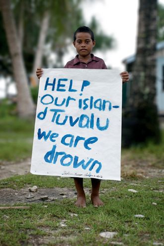
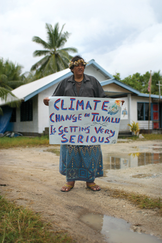

Begin Scrolling
The islands that form the Pacific Islands are experiencing a rapidly increasing threat due to human exacerbated climate events. These climate events are resulting in increased displacement, the majority of which occurring within the same country.
Climate Refugees - migrants who are forced to relocate to a different country due to climate related disasters, typically floods, storms and fires however increasingly due to rising sea levels and climate change exacerbated disasters.
The Pacific Islands are sinking, along with their estimated 2.3 million inhabitants.
“When I came back I immediately noticed the difference. The heat is sometimes unbearable now, and the erosion is also dramatic. Some of my favourite spots have disappeared.”- Tuvalu Resident
Whole nations may vanish in the near future.

Already, two of Tuvalu’s nine islands are on the verge of going under, the government says, swallowed by sea-rise and coastal erosion. Most of the islands sit barely three metres above sea level, and at its narrowest point, Fongafale stretches just 20m across.
“As the temperature of the oceans increases, more corals will die. Sea levels will rise and severe storms will get far worse. Tuvalu faces a very uncertain future.”- Apisai Ielemia, Prime Minister of Tuvalu (2006 - 2010)

People displaced by climate change have no rights, no country to return to, no country to go to. Unlike refugees escaping conflict there are no international laws on the settlement and treatment of climate refugees.
“Scott Morrison has referred to us as a family, as the Pacific family. And I think as a family you have a duty and responsibility to look out for your neighbour.”- Simon Kofe, Foreign Minister of Tuvalu
Yet countries do nothing, they pretend to care but fail in every regard on climate and migration policy for those who will be worst affected by the catastrophic event of climate change.